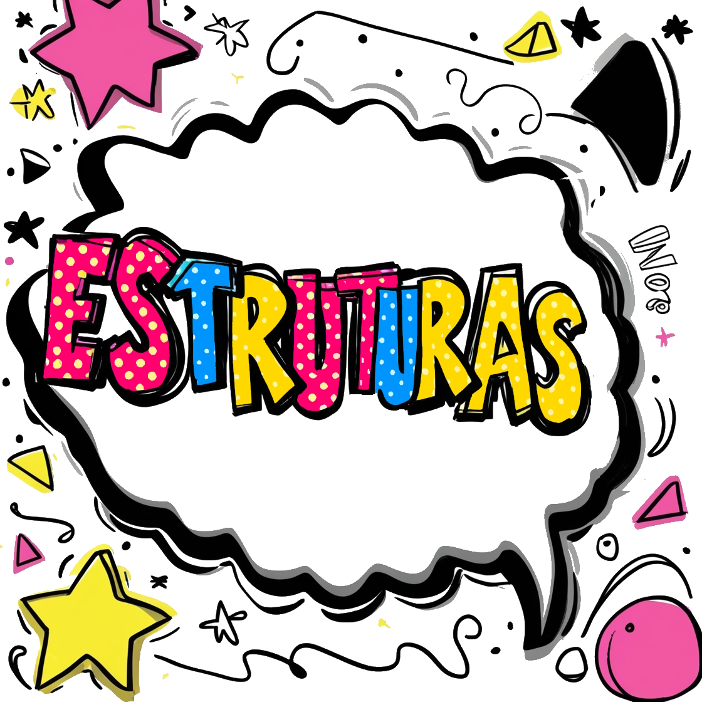

Curso de Inglês

Estruturas Gramaticais Simples
Este tópico aborda as estruturas gramaticais fundamentais para iniciantes, incluindo a formação de frases, o uso de verbos no presente simples e preposições de lugar.
- Frases afirmativas, negativas e interrogativas:
Formação de diferentes tipos de frases em inglês.
- Frases afirmativas:
- "I like apples."
- "She reads books."
- Frases negativas:
- "I do not like apples."
- "She does not read books."
- Perguntas:
- "Do you like apples?"
- "Does she read books?"
- Frases afirmativas:
- Verbos no presente simples:
Uso e conjugação de verbos no tempo presente simples.
- Conjugação de verbos regulares:
- "I eat", "You eat", "He/She/It eats", "We eat", "They eat".
- Regras para adicionar "s" na terceira pessoa do singular:
- "He plays", "She watches", "It goes".
- Exemplos de frases com verbos no presente simples:
- "I work every day."
- "She studies English."
- Conjugação de verbos regulares:
- Preposições de lugar:
Uso de preposições para indicar localização.
- Preposições básicas: in, on, under, next to.
- Exemplos de uso em frases:
- "The book is on the table."
- "The cat is under the chair."
- "The lamp is next to the bed."
- "The keys are in the drawer."
- Prática com exercícios de localização:
- "Where is the dog?"
- "The dog is next to the tree."